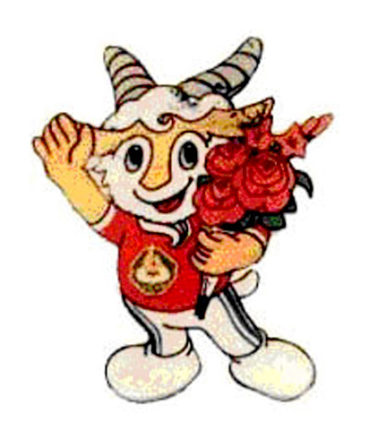
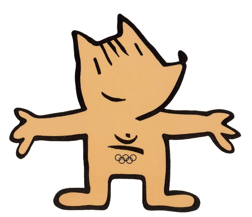
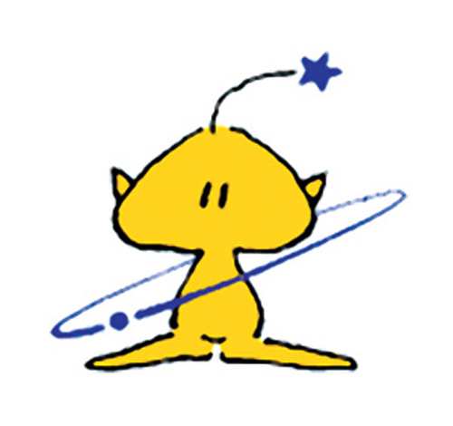

10.生动的吉祥物
-
1984年第23届洛杉矶奥运会吉祥物
吉祥物“山姆鹰”头戴有美国国旗图案和奥运会永久会徽的大礼帽，鹰是美国的国鸟，被认为是自由和力量的象征。
-
1987年第6届全运会吉祥物
 -
1992年第25届巴塞罗那奥运会吉祥物
这是抽象的卡通造型，是一只又像山羊又像狗的动物，取名为 Cobi。
 -
1993年韩国大田世博会吉祥物“梦精灵”
这是一个能施展各种本领的宇宙小精灵的形象，表达了人类对科学技术的梦想。
 -
1998年第18届长野冬季奥会吉祥物
日本人选择四只小猫头鹰做为吉祥物， 取名为 Snowlets，每只都还有不同的名字 ， 分别取名为 Sukki，Nokki，Lekki，Tsukki，代表火、风、地和水四个不同的森林生命组成要素。
-
2005年爱知世博会吉祥物 “森林小子”和“森林爷爷”
-
2011年第8届中国残疾人运动会吉祥物
-
2011年第9届全国少数民族传统体育运动会吉祥物
-
2011年第11届全国中学生运动会吉祥物
蕴含着包头人民热情欢迎全国中学生运动健儿齐聚草原鹿城，携手共进，奔向成功。
-
2012年第30届伦敦奥运会吉祥物
这两个独眼吉祥物是为儿童设计的。它们的大眼睛其实是一个摄像头，头上的黄灯代表了具有标志性意义的伦敦出租车，而手上则戴着代表友谊的奥林匹克手链。